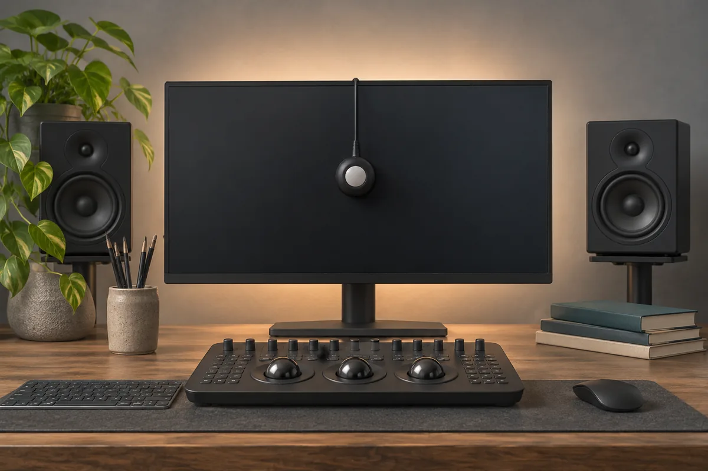

Acoustics, Calibration & Asset Architecture
Setting Desk Monitor Brightness and Bias Lighting for Accurate Color Work

A bright screen against a dark wall makes your eyes repeatedly adapt, while light reflected off the panel can hide shadow detail. Set SDR screen white to 100–120 cd/m², then measure the neutral D65 wall glow at about one tenth of that value. Check a near-black pattern from your editing seat before making exposure or black-point decisions.
Scroll horizontally or focus the diagram and use the arrow keys to see all labels.
Choose the white level for the job
Start at 100 cd/m² for SDR video review in a dim room, or 120 cd/m² for SDR photo and web editing at a desk with controlled room light. Use 110 cd/m² if you need one everyday setting and have no delivery specification. Those numbers describe a white test patch. A brightness slider at 60% tells you only where the control sits, and the same slider position can yield different luminance after a preset change.
Hold the viewing conditions steady before judging a file. A bright white canvas followed by a glance into darkness makes your eyes adapt to very different light levels. A dim, neutral halo makes the transition less abrupt and gives you a consistent surround for judging dark tones. Excessive wall light can swing the problem the other way, particularly when it reaches the panel and veils dark detail.
| Work | Screen white | Wall at 10% | Tone response |
|---|---|---|---|
| SDR video review | 100 cd/m² | 10 cd/m² | BT.1886 for BT.709 reference review |
| Mixed SDR desk work | 110 cd/m² | 11 cd/m² | Use the response specified for the job |
| SDR photo and web editing | 120 cd/m² | 12 cd/m² | sRGB response for an sRGB preset |
The 100 cd/m² video example and roughly 10% surround come from the HDTV reference environment. The other rows apply that ratio as a desk setup heuristic. Follow the delivery specification for formal review, and set up HDR or print proofing separately. A print viewed under a proofing lamp brings its own illumination and paper-white reference. ITU-R BT.2035
Measure screen white before setting the light
Close the blinds, switch off lamps that strike the screen, and let the monitor stabilize for the time its manual specifies. Lock the monitor into the SDR preset you will use. Disable automatic brightness, night tint and dynamic contrast. If local dimming is part of the intended mode, keep its setting fixed and use the patch geometry required for that mode. Otherwise, switch it off for a stable SDR setup.
In calibration software, choose D65, your luminance target and the appropriate tone response. Select the meter correction for your panel technology. Place the display colorimeter flat at screen center, with its ambient diffuser parked away from the sensor. Let the software display its white patch. Adjust the backlight or luminance control, allow the reading to settle, and measure again. Leave the contrast control at its calibrated or preset position unless the display instructions call for an adjustment.
If the first reading is 143 cd/m² and you want 110, reduce the control in steps. For example, a setting of 42 might yield 116 cd/m² and 38 might yield 109 cd/m². Use the measured result rather than scaling the slider by 110 ÷ 143. Finish calibration, install the resulting display profile where the workflow uses one, then remeasure white. On a panel that dims large bright areas, compare the calibration patch with a larger white field and record the patch size if the readings diverge.
Place the D65 bias light behind the display
Start with about 20 cm between the back of the display and a matte, neutral wall. Sit about 70 cm from the screen with your line of sight close to perpendicular at the center. These are setup dimensions for the diagram, so adjust them for your panel, desk and posture. Aim the LEDs at the wall and tuck the emitter behind the bezel silhouette. Check from your normal seat and from the standing position you use to review work.
Look for a lamp with documented D65 chromaticity. D65 corresponds to CIE 1931 coordinates x = 0.3127 and y = 0.3290. A package marked 6500 K gives a nominal color temperature, which leaves room for a visible green or magenta tint. The wall also changes the reflected color. If you have a spectroradiometer, check the bounce at the dimmer setting you plan to use. On a colored wall, put up a sufficiently wide matte neutral backing and check its reflection. CIE D65 reference spectrum
A shallow gap can leave a narrow, bright stripe. Move the monitor forward a few centimeters or spread the light across more of the wall before dialing up the dimmer. Turn off saturated accent lights and move reflective objects out of the halo. The orange marks in the diagram identify the light path and sample points.
Measure the wall from the editing seat
With the monitor showing black and the room in its working state, aim a spot luminance meter from eye position at five exposed wall patches around the screen. Use the diagram’s grid, sampling a hand’s width beyond the screen silhouette where space permits. Keep the meter’s sampling area clear of the bezel and any direct view of the lamp. Check that the meter can resolve values near 10 cd/m². A contact display probe on the wall or a lux meter at the desk cannot directly supply this reading.
Divide the median wall reading by measured screen white. Suppose white is 110 cd/m² and the five wall readings are 9, 10, 11, 12 and 16 cd/m². The median gives 11 ÷ 110 = 10%, but the bright patch reaches almost 15%. Shift the light or increase its distance to soften that patch, then remeasure the whole grid. For this desk, treat readings of roughly 9–13 cd/m² as a practical band around the 11 cd/m² target.
With only a lux meter, you can log a repeatable dimmer setting. Hold its diffuser at the wall patch, parallel to the wall and facing into the room. If a matte surface has a known diffuse reflectance of 0.70 and receives 50 lux, the ideal diffuse estimate is 50 × 0.70 ÷ π ≈ 11 cd/m². Unknown paint reflectance or a glossy surface makes this conversion unreliable. Record the lux reading and sensor position and leave the luminance ratio unverified.
Check shadows and record the setup
Give your eyes a few minutes in the finished room, then open a trusted near-black staircase through the app you edit in. Compare it with the bias light on and off from the same seat. Look for a soft reflection across the screen and for above-black steps that disappear when the light comes on. If they do, reposition or shield the light and repeat before touching the image. If they stay merged in both conditions, confirm the source and display agree on full or limited video range. Compare with a known-good pattern before changing the monitor’s black-level control.
Open a familiar image with dark fabric, hair or painted wood. Look for texture that survives the jump from the white interface to the image area. Save the monitor preset and profile name alongside the measured white, wall readings, dimmer position and room conditions. Repeat the measurements after moving the desk, repainting the wall or replacing the lamp. Before a critical pass, make the following checks at the seat you will actually use.
- Remeasure the same white patch and confirm the chosen 100–120 cd/m² target in the active SDR preset.
- Confirm the wall glow is neutral and near one tenth of measured white, with a separate check for the brightest visible patch.
- Show a black field and check that the LEDs are hidden and the panel has no visible reflection from the bias light.
- Confirm adjacent above-black steps remain distinguishable and a neutral gray ramp shows no obvious tint or sudden jumps.